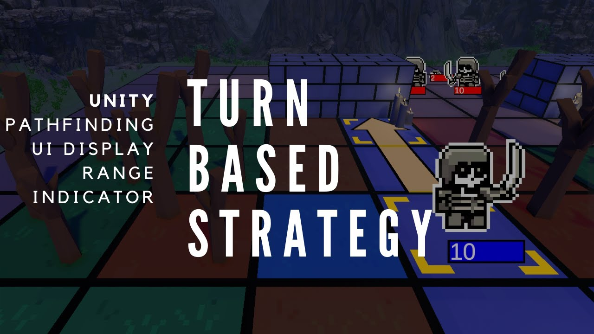
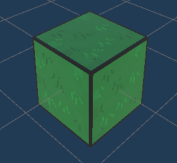
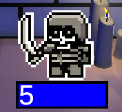
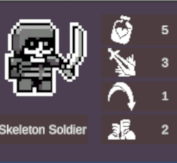

Skeletons
About The Project
I've always wanted to develop my own game but never found the spare time to do so. After finishing my honours project, I had some spare time until graduation. I decided that I would use this time to develop a game under one of my favorite game genres, turn based strategy games. I was fairly familiar with Unity, as I've been making game systems on the side. This time I wanted to realize and fully develop the project, instead of making a few systems and then calling it a day. I began by researching grid based movement and with the help of some online resources I got started with a strong foundation. From start to finish, I tackled everything that was required for a complete game. I summarized a majority of the steps I took in order to complete my project in the video below. However I will also document my thought process and the taks I needed to complete below. In addition to the code snippets, you can view the entire project or a few of the scripts at my GitHub repository here!
Topics
- Creating game objects and systems
- Creating intuitive UI
- Improving Game Feel
- Designing the level and environment
- Debugging and Documentation
- Miscellaneous
Creating game objects and systems
Building the Map
When I started the project, I was mainly invested into building the systems for the game to function. I started simple, just getting a grid setup. The grid was built on a multidimensional array each index representing a tile on the map. Each tile would have properties which would define how units would interact with it. The information stored can be seen below. Each tile would have a visualPrefab that represented the tile in game, a reference to a unit that is occupying the tile, the movement cost to enter the tile, and finally a boolean if the unit can walk onto the tile. These tiles were then stored in a graph, each node in the graph representing a tile. By setting up a graph with a node based system, each node had references to the tiles around them. This would prove useful down the line when the A* pathfinding algorithm needed to be implemented.
/* Unity uses C#
I mainly used public variables for easy access in the Unity inspector,
I would change the values based on what tile the gameObject should represent.
*/
public string name; //This would be a string representation of the tile, a grass tile would be titled "grass"
public GameObject tileVisualPrefab; //This would house a gameObject that gives a visual representation of the tile. Ex. grass tile above
public GameObject unitOnTile; //If a unit was on the tile, the tile would have reference for Unit traversal calculations
public float movementCost = 1; //The amount of movement required to enter a tile (moving on a road is easier than a grass)
public bool isWalkable=true; //Some tiles shouldn't be entered such as a wall
Creating Units
 Having a map is great, but you can't really play chess without any pieces. After setting up the two dimensional array, I started to create a base unit that I could begin testing with. Unit gameObjects ideally should have a similar setup to the tiles, that being some scripts that provide information and a visual represntation of the chracter. Each unit will have its own set of characteristics that would make it unique from the others. Below is the standard setup that is used for every unit in the game, do bear in mind that there is a lot more functionality that I placed in the unit script aside from basic stats. Looking in retrospect, I should have kept the unit stats and other functionality, such as the unit's state in seperate files.
//Some of the variables that hold information regarding the unit
//A majority of these were set in the inspector and saved as gameObjects
//UnitStats
public string unitName;
public int moveSpeed = 2;
public int attackRange = 1;
public int attackDamage = 1;
public int maxHealthPoints = 5;
public int currentHealthPoints;
public Sprite unitSprite;
//Started using enums to record the current state of the unit, this worked out fairly well
//Enum for unit states
public enum movementStates
{
Unselected,
Selected,
Moved,
Wait
}
Movement System
A* pathfinding
Once I've made my units I needed to allow them to move around the board. Once a unit is selected, the player can click on a tile within the unit's movement range in order to travel to the tile. In order to acheive this I looked into implementing the A* pathfinding algorithm. The A* algorithm is similar to Dijkstra's finding the shortest path available to reach a destination. The algorithm looks for the smallest cost of traversal from its starting position, travelling node to node recording its cost. As the algorithm travels with the shortest cost, once it reaches the destination, we know that the path to get there is the shortest cost route. Once the path has reached the endpoint, the algorithm then retraces its steps back to the beginning. The resulting chain of nodes will be the shortest path between the starting position and the endpoint. The path is then given to the unit, and the unit will follow the steps in order to reach the destination.
Available Movement System
Now that the A* algorithm has been implemented, units can move efficiently to a designated endpoint. However it is still difficult for the player to determine what tiles the unit can reach. In order to show accurate movement options to the player I needed to write a new function to calculate all available movement options for the unit. Below you can see the code that I wrote in order to get the correct nodes that the unit could walk to. I encourage you to watch the video for the explanation behind this function and how it works. I had a very enjoyable time programming and figuring out how this would work.
//In:
//Out: HashSet of the tiles that can be reached by unit
//Desc: returns the hashSet of nodes that the unit can reach from its position
public HashSet getUnitMovementOptions()
{
float[,] cost = new float[mapSizeX, mapSizeY];
HashSet UIHighlight = new HashSet();
HashSet tempUIHighlight = new HashSet();
HashSet finalMovementHighlight = new HashSet();
int moveSpeed = selectedUnit.GetComponent().moveSpeed;
Node unitInitialNode = graph[selectedUnit.GetComponent().x, selectedUnit.GetComponent().y];
///Set-up the initial costs for the neighbouring nodes
finalMovementHighlight.Add(unitInitialNode);
foreach (Node n in unitInitialNode.neighbours)
{
cost[n.x, n.y] = costToEnterTile(n.x, n.y);
//Debug.Log(cost[n.x, n.y]);
if (moveSpeed - cost[n.x, n.y] >= 0)
{
UIHighlight.Add(n);
}
}
finalMovementHighlight.UnionWith(UIHighlight);
while (UIHighlight.Count != 0)
{
foreach (Node n in UIHighlight)
{
foreach (Node neighbour in n.neighbours)
{
if (!finalMovementHighlight.Contains(neighbour))
{
cost[neighbour.x, neighbour.y] = costToEnterTile(neighbour.x, neighbour.y) + cost[n.x, n.y];
//Debug.Log(cost[neighbour.x, neighbour.y]);
if (moveSpeed - cost[neighbour.x, neighbour.y] >= 0)
{
//Debug.Log(cost[neighbour.x, neighbour.y]);
tempUIHighlight.Add(neighbour);
}
}
}
}
UIHighlight = tempUIHighlight;
finalMovementHighlight.UnionWith(UIHighlight);
tempUIHighlight = new HashSet();
}
Debug.Log("The total amount of movable spaces for this unit is: " + finalMovementHighlight.Count);
Debug.Log("We have used the function to calculate it this time");
return finalMovementHighlight;
}
Battle System
The battle system that I created for this game is fairly straightforward. It's similar to the battle systems that other turn based strategy games use. The unit that initiates the attack will get to do damage first, then if the receiving unit survives then it can retaliate (granted they have the same attack range). Whenever a unit's hp hits 0 then the unit dies, by a gameplay perspective it is most beneficial to reduce a unit's hp to 0 on initiation as you will not receive any retaliation damage. There are also a lot of ways to indirectly attack in this game allowing the player to strategize how they will approach their opponent.
UI System

For the UI I wanted to ensure that information was clearly shown to the player. This includes the unit's stats
the movement range, attack range, and the path that the unit would take in order to reach the destination. As I have
never tackled this type problem before I had to think of a creative solution to properly display the information
to the player. When a unit is moused over, its stats are shown in the top left corner of the screen. I threw in some
icons to help the player understand what numbers correspond to which stats. To display the accurate grid UI, I needed to
think creatively and use different UI panels that are stacked on different layers to provide a believable display. Below you
can see the different layers working together to create a cohesive system. For the purposes of the image below, I clearly seperated
the UI layers. During the game these layers are very closely layered together and it seems to be one cohesive layer.

Improving Game Feel
After creating all the systems and ironing out all the bugs, the game was functional but was missing a bit of character. I improved game feel by adding a few different elements, the first being a slight camera shake that would scale up depending on how much damage an attack did. This gave the battles a bit more punch. In addition I modified an RTS camera asset that was free from the Asset Store, by modifying the camera I let the player zoom into the battlefield and the sprites would re-adjust their viewing angles in order to give them more depth. I also added a few particle effects and changed the atmostphere of the game with the use of some post processing effects and lighting techniques. After countless updates with the terrain system, music choice, particle systems, and fog levels I finally made a believable game world that could accompany our cast of characters.
Debugging and Documentation
Debugging was always an enjoyable portion of the project, it really humbled me as I saw the cracks in the systems that I built. There were problems that I never thought would happen as they were an afterthought when I added new systems. One of the most notable ones were when I added animations to my chracters. Before the animations were added, the instant the player clicked the destination for the unit it would 'teleport' to the designated area immediately, switching its state to 'moved'. However after adding animation the state wasn't set until the unit reached its destination, allowing the player to click multiple times to either move further than intended or attack multiple times when the character was in its moving animation. Another important lesson that I learned was to properly document my code, there were nights where I would hack away at implementing a new system and go to sleep right after I got it to work. The next morning I would find a few bugs but wouldn't be able to easily determine where the issues were occuring as I haven't accurately documented my work. Ah the despair!
Lessons Learned and Conlusions
Overall I really enjoyed spending time working on this project. It gave me the oppurunity to think about how I would implement certain features and tested my ability to continually test and improve my code. Moving forward I will always write detailed documentation as I know first hand how difficult it is to understand other people's code at a glance. Another lesson that I learned was to always try to future proof systems, as many of my old systems ran into problems as soon as I implemented new features. In addition to programming I also learned many new skills on this project. I created and animated all the sprites, learned how to use terrain, lighting, and post processing systems, and also learned how to effectively communicate to the player using UI elements and tutorials pages. Overall I'm very pleased with this project, however if I had more time I would have placed more objectives on the map to encourage more unique gameplay and strategies.